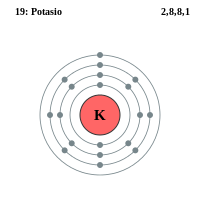
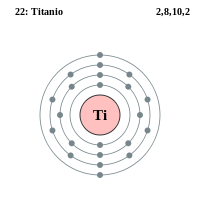

Podemos ver que la tabla periódica moderna está ordenada de menor a mayor según su número atómico, esto es debido a la cantidad de protones que tiene cada átomo en ese elemento. También vemos cómo está dividida en 18 grupos en forma de columnas y 7 periodos en horizontales.
En los 18 grupos cada columna de los elementos tiene propiedades químicas similares de uno al otro.
Cada grupo está clasificado de diferente forma.
Grupo 1: metales alcalinos
Grupo 2: metales alcalinotérreos
Grupo 3: familia de escandio (tierras raras y actínidos)
Grupo 4: familia del titanio
Grupo 5: familia del vanadio
Grupo 6: familia del cromo
Grupo 7: familia del manganeso
Grupo 8: familia del hierro
Grupo 9: familia del cobalto
Grupo 10: familia del níquel
Grupo 11: familia del cobre
Grupo 12: familia del zinc
Grupo 13: térreos
Grupo 14: carbonoideos
Grupo 15: nitrogenoideos
Grupo 16: calcógenos o anfígenos
Grupo 17: halógenos
Grupo 18: gases nobles
La configuración electrónica externa es lo que quedó afuera de la configuración electrónica. Pongamos un ejemplo: K 19(El 19 es el número atómico): 1S2 2S2 2P6 3S2 3P6 4S1 Como vemos en el ejemplo bajamos de nivel hasta llegar a su número atómico y vemos como 4S1 es al nivel que llegamos siendo este la configuración electrónica externa.
Primero ¿que son los niveles energéticos? Los niveles energéticos son la carga de energía que posee un electrón respecto a la cercanía o lejanía del núcleo atómico.
Se lo pueden representar como n (nivel)=1, 2, 3, 4, 5, 6, 7 o por n (nivel)=K, L, M, N, O, P, Q
Como vemos en la imagen de arriba el átomo tiene dos niveles de energía el nivel 1 y 2 o el nivel K y L.
Bueno ahora hablaremos sobre la cantidad de electrones de cada nivel de energía que lo podemos hallar con la fórmula 2n2.
En el nivel K n=1 tiene como máximo 2e-
En el nivel L n=2 tiene como máximo 8e-
En el nivel M n=3 tiene como máximo 18e-
En el nivel N n=4 tiene como máximo 32e-
Luego va bajando
En el nivel O n=5 tiene como máximo 18e-
En el nivel P n=6 tiene como máximo 8e-
En el Q n=7 tiene como máximo 2e-
A medida que aumenta el nivel de energía también aumenta el tamaño de un átomo y también aumenta la energía del electrón.
En el nivel energético existen reglas como:
Ejemplos:
19 K(Potasio): en el n 1 tiene 2e-, en el n 2 tiene 8e-, n 3 tiene 8e- y n 4 tiene 1e-

22 Ti (Titanio): en el n 1 tiene 2e-, n 2 tiene 8e-, n 3 tiene 10e- y n 4 tiene 2e-
Clasificación de los elementos:
Para saber que nivel tiene cada átomo solo es cuestion de ver la tabla periodica y fijarse en que periodo esta ya que con esto se nos hara mas facil saber que nivel tiene.
Ejemplos:
Los que tienen solo un nivel son el H (Hidrógeno) y He ( Helio).
Los que tienen solo hasta el segundo nivel son el Li (Litio), Be (Berilio), B (Boro), C (Carbono), N (Nitrógeno), O (Oxígeno), F (Flúor) y Ne (Neón).
Las propiedades periódicas comparten ciertas características físico-químicas.
Radio Atómico: Son los electrones que se ubican en diferentes niveles alrededor del núcleo y el radio atómico sería la distancia entre los electrones de la última capa y su núcleo.
Radio Iónico: Es la distancia del centro del núcleo del átomo y el electrón estable que está más alejado del mismo.
Energía de Ionización: Es la energía que se encarga de sacar un electrón a un átomo neutro, convirtiéndolo en un catión.
Afinidad Electrónica: Es la energía que es liberada cuando se le agrega un electrón a un átomo neutro en un estado gaseoso.